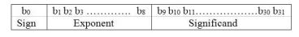
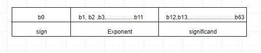

The standards for representing floating point numbers in 32-bits and 64-bits have been developed by
the institute of Electrical and Electronics Engineers (IEEE), referred to as IEEE 754 standards.
1.Floating Point Representation:
IEEE floating point representation for binary real numbers consists
of three parts.

1. Sign, for which 1 bit is allocated. 0 represents a positive number and 1 for negative number.
2. Exponent is allocated 8 bits.
3. Mantissa (called significand in the standard) is allocated 23 bits.
As both positive and negative
numbers are required for the exponent, instead of using a separate sign bit for the exponent, the standard uses a biased
representation. The value of the bias 127.
2. Double Precision Floating Point Representation:
The IEEE 754 floating point standard for 64-bit (called doubleprecision) numbers is very similar to the 32-bit standard.The
main difference is the allocation bits for the exponent and the significand.

1. Sign, for which 1 bit is allocated. 0 represents a positive number and 1 for negative number.
2. Exponent is allocated 11 bits.
3. Mantissa (called significand in the standard) is allocated 52 bits.
The value of the bias 1023